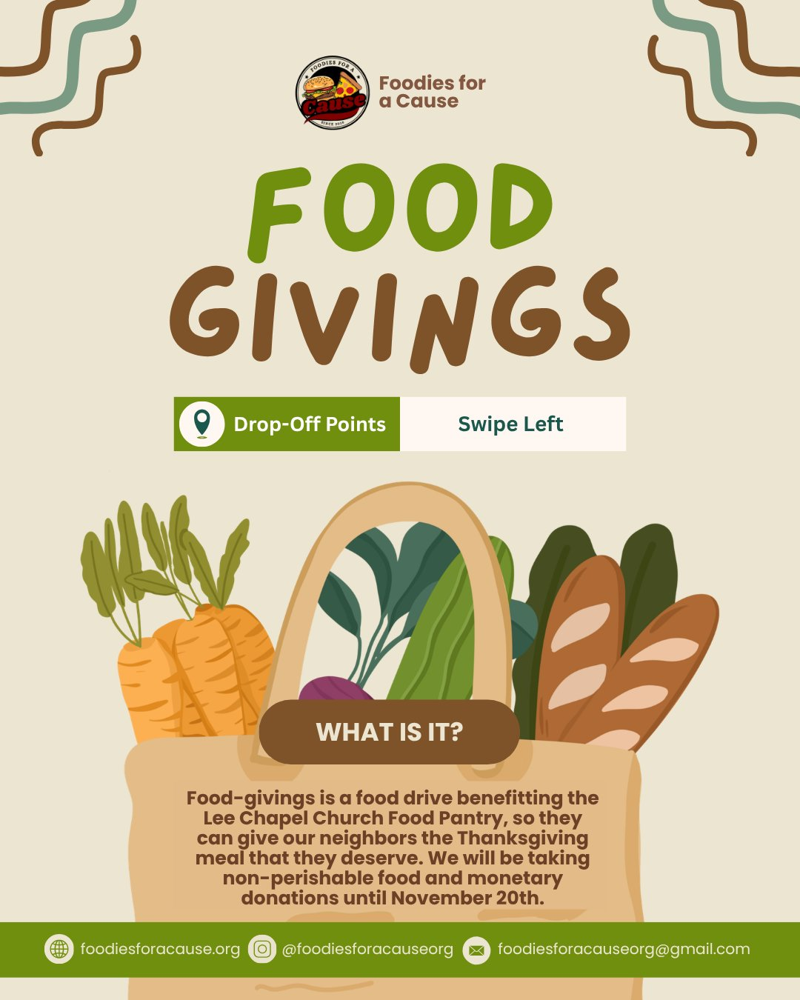

Food Drive
Food-Givings
- What
- Food drive for the Thanksgiving meal
- Benefiting
- Lee Chapel Church Food Pantry
- Accepting
- Non-perishable food and monetary donations
- Through
- November 20
Food-Givings helps the Lee Chapel Church Food Pantry give our neighbors the Thanksgiving meal they deserve.